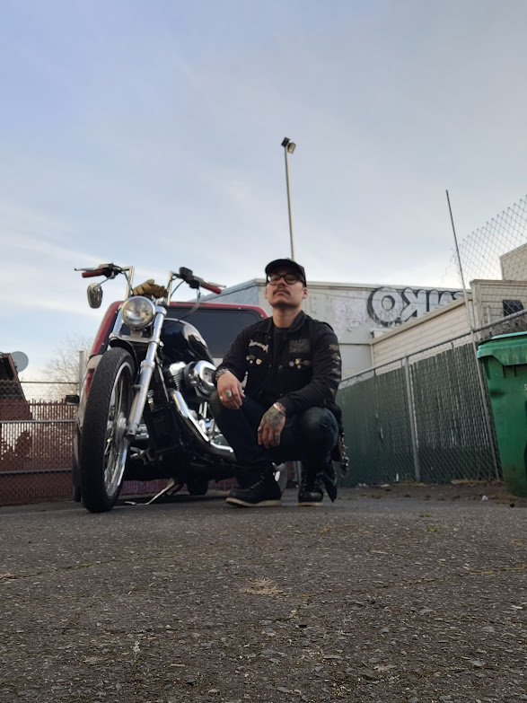
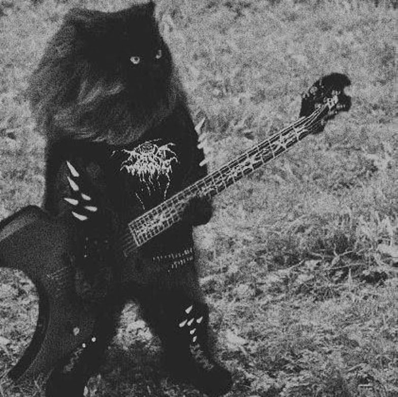
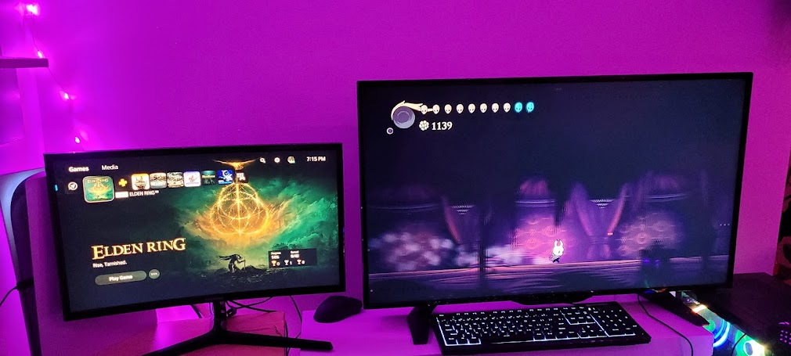
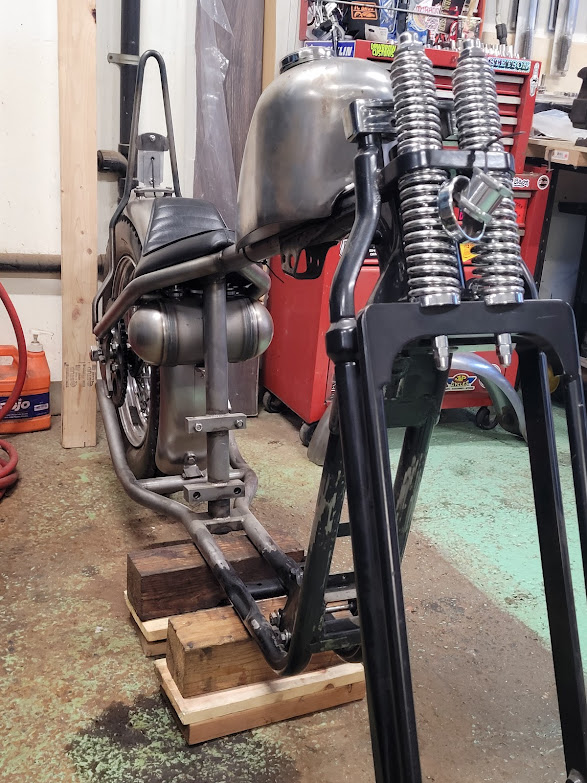
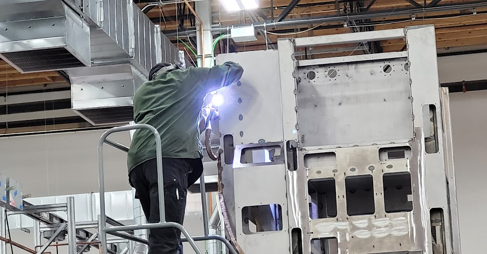

Welcome To My Portfolio!
My name is Manuel.
About Me:
Hello! My name is Manuel. I have been a welder for approximately 6 years.
I began my journey at Epicodus last week!
Been working hard as welder and came to the realization that I wanted something
more in life. Don't get me wrong, I love welding.
It's just time for a change and start a new career. Welcome to my life.
A little bit more about me and my interests and hobbies:
- I love to ride my Harley Davidson.Ever since I was kid, I have always loved being on two wheels.
- Have I mentioned that I'am a Metalhead? Yes, I love Heavy Metal music ie: Blackmetal, Deathmetal, and Melodic Doom!
- In my downtime I enjoy either reading Science Fiction or playing videogames. Currently reading Foundation: By Isaac Azimov and playing ELden Ring.
- 
- Welding is definitely one of my favorite hobbies! Also I am certified AWS welder for MIG & TIG. Here are some photos of a nitrogen purging system I welded and my current HarleyDavidson project:
 
If you have any questions or just stopping by to say hi-
You can email me here